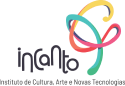

Somos mais do que uma agência de eventos artísticos, promovemos experiências únicas em cada apresentação.
Desate nós e construa laços
A Entrelaços é uma agência social que foi criada em 2019 para suprir as necessidades financeiras da ONG Incanto e poder impactar mais vidas através da cultura, arte e tecnologia.
Promovemos personalização e inovação de performances artísticas para eventos, basicamente somos uma ponte que faz a ligação dos artistas com o cliente final, através de experiências incríveis e impacto social.
Como atuamos?
Desenvolvemos performances artísticas e culturais para eventos corporativos e sociais de forma personalizada para cada empresa, a fim de ajudá-las a criar um relacionamento melhor com seus clientes através de experiências únicas e significativas.
O Encanto que é o Incanto

O Instituto Incanto é uma Ong que transforma vidas de crianças e adolescentes em situação de vulnerabilidade social.
Nesse momento o Incanto atende 17 ONGs, usando a cultura e a arte como ferramenta de humanização para transformar a vida de mais de 510 crianças.
Respeitável Público
Para nós, cada evento é único, damos sempre o nosso melhor para vermos o brilho nos olhos de quem está assistindo!
frame
Desate seus nós e construa laços conosco
Rua Professor Ulisses Vieira, 2934, Santa Quitéria, Curitiba - PR, 80310-120 A entrada é pela Rua Adalberto Gil da Silva, 205, no final da Rua Ulisses, à direita.
contato@entrelaçosage.art.br
Horário de Atendimento Seg à Sex: 08:00 am – 06:00 pm
Quer criar uma experiência inovadora, artística e também social para o seu evento?